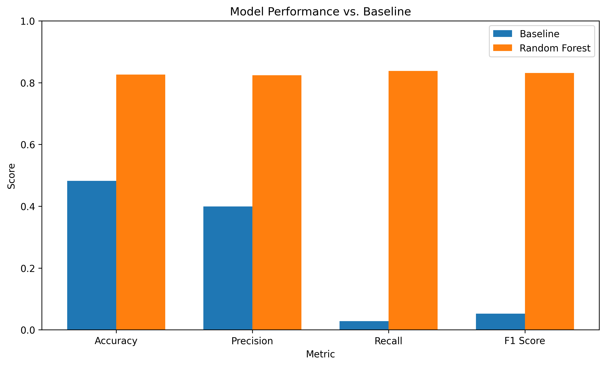
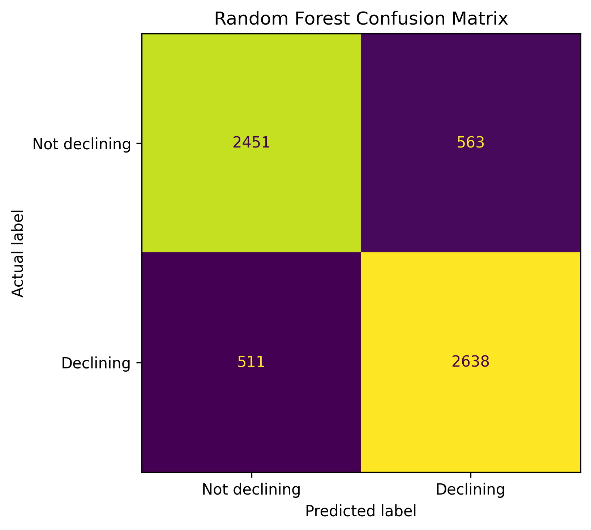
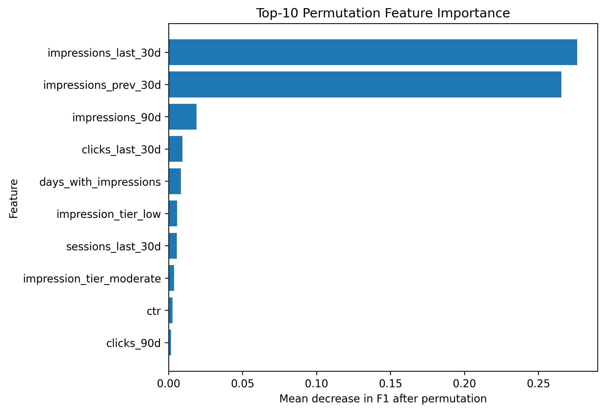
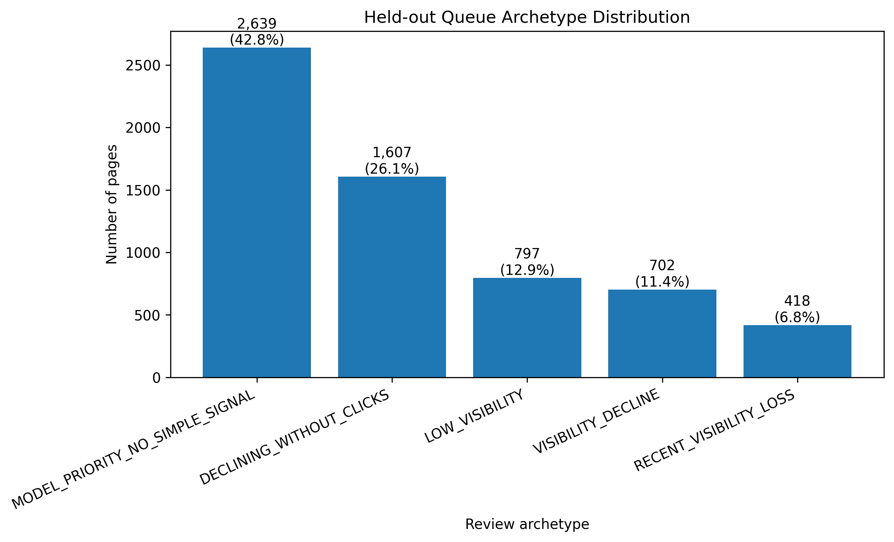

Prioritizing Content Refresh Opportunities with Machine Learning
A client-grouped evaluation of page-level signals associated with declining search performance.
This study asks whether machine learning can help prioritize content pages for review based on signals associated with declining search performance. Using 30,000 anonymized content records, I trained a Random Forest classifier and evaluated it using a client-grouped split that kept clients separated between training and held-out test data. On the held-out set, the Random Forest achieved an F1 score of 0.831, compared with 0.052 for a transparent freshness-and-visibility baseline using the same evaluation set. The model was then used to rank pages into a human-review queue, with recent impression and visibility signals among the strongest predictive features and the top 50 pages organized into observable diagnostic pathways. These results support using the model as decision-support for prioritizing content review, but they do not establish that content refreshes cause improved search performance or guarantee performance on future data.
1. Introduction / Problem Statement
Content teams may have more pages requiring performance investigation than can be reviewed manually. When search performance declines, reviewers need to determine which pages warrant attention first and which observable signals should be investigated before deciding whether any content intervention is appropriate.
Simple rule-based approaches can provide transparent prioritization using individual signals such as content freshness and search visibility. However, these rules may not capture combinations of signals that distinguish declining from non-declining pages. A machine-learning model can potentially learn more complex patterns from historical page-level performance data and use those patterns to prioritize pages for human review.
This study therefore asks: Can a machine-learning model help prioritize content pages for human review based on signals associated with declining search performance?
The intended use is to help determine which pages should receive attention first for further content-performance investigation. The model is designed as decision support rather than an automatic content-refresh system. A high model score indicates that a page resembles patterns associated with the declining class in the evaluated data; it does not establish that the page is incorrect, that it should definitely be refreshed, or that a refresh would improve future search performance.
2. Data
This study uses the anonymized content_refresh_anonymized.csv dataset provided as part of the FlyRank Machine Learning Internship. The dataset contains 30,000 content records across 44 columns, with each record representing an anonymized content page and its associated search-performance, engagement, content, and freshness signals.
The available variables include measures of search demand and visibility, such as search volume, impressions, clicks, and average search position; engagement measures such as sessions and engaged sessions; and page-level characteristics including content length and days since last update. These variables provide the observable signals used to model whether a page belongs to the declining class.
2.1 Study population and outcome
The analysis used all 30,000 records in the provided dataset. The outcome was derived from trend_direction, with down treated as the declining class and all remaining observed categories treated as non-declining. This resulted in 16,262 declining pages (54.2%) and 13,738 non-declining pages (45.8%).
For evaluation, the records were divided using a client-grouped train/test split. The training set contained 23,837 records from 25 clients, while the held-out test set contained 6,163 records from 7 clients. No client appeared in both sets, allowing the held-out evaluation to test performance on clients not represented in training.
2.2 Variables and preprocessing
The model used numerical and encoded categorical features representing search visibility, search performance, engagement, content characteristics, and freshness. Representative variables included search_volume, impressions_90d, clicks_90d, sessions_90d, engaged_sessions_90d, days_since_last_update, ctr, avg_position, char_count, and word_count.
Several variables contained missing values, including char_count, word_count, competition, search volume, CPC, and scroll_rate. Missing numerical values were handled using medians calculated from the training data, with corresponding missingness indicators added before model fitting. The same training-derived medians were then applied to the held-out test data.
2.3 Exclusions
Variables that could directly reveal the outcome or introduce identifier-based shortcuts were excluded from predictive modeling. These included trend_direction, trend_pct, target, content_id, and client_id. The baseline-derived variables baseline_score and baseline_prediction were also excluded so that the Random Forest would not directly reproduce the rule-based baseline.
The dataset is anonymized. The public research artifact does not expose client names, private URLs, private search queries, or other identifying information.
3. Methodology
The analysis was designed to evaluate whether a machine-learning model could identify pages associated with the declining class more effectively than a transparent rule-based prioritization approach. The methodology combines a binary outcome definition, page-level predictive features, a rule-based baseline, client-grouped validation, and explicit checks for target and identifier leakage.
3.1 Analytical assumptions
The analysis treats the available page-level search, engagement, content, and freshness signals as observations that may contain information about whether a page belongs to the declining class.
The analysis is observational rather than causal. The model estimates whether a page resembles patterns associated with the declining class in the evaluated data; it does not attempt to establish why a page declined or whether a particular content intervention would improve future search performance.
The primary validation design therefore focuses on generalization across unseen clients, rather than treating the evaluation as a causal or fully time-aware study.
3.2 Outcome definition
The binary classification target was derived from trend_direction:
- down → 1 (declining)
- all other observed trend categories → 0 (non-declining)
This produced 16,262 declining pages (54.2%) and 13,738 non-declining pages (45.8%).
The target was used only as the outcome variable and was excluded from the model's predictive features.
3.3 Predictive features and preprocessing
The Random Forest used page-level features representing search visibility, search performance, engagement, content characteristics, and freshness.
Representative features included:
search_volumeimpressions_90dclicks_90dsessions_90dengaged_sessions_90ddays_since_last_updatectravg_positionchar_countword_count
Categorical variables were one-hot encoded. Missing numerical values were handled using medians calculated from the training data, with missingness indicators added for variables containing missing values. The same training-derived medians were applied to the held-out test set. After preprocessing, no missing values remained in either matrix.
All preprocessing parameters derived from the data were determined using the training set before being applied to the held-out test set, preventing information from the held-out data from influencing model preparation.
3.4 Rule-based baseline
A transparent rule-based baseline was used as a reference point for evaluating the machine-learning model.
The baseline combines two observable signals:
- Freshness: 0–3 points according to freshness tier
- Search visibility: 0–3 points according to impression tier
The resulting score ranges from 0 to 6. Pages with a score of 4 or higher receive the baseline reason code STALE_VISIBLE and the action label REFRESH_CONTENT.
For ranking, pages are ordered by baseline score, with impressions_90d used as a tiebreaker.
The baseline was intentionally designed to be simple and interpretable. It provides a transparent reference for assessing whether the Random Forest captures predictive information beyond freshness and visibility alone.
3.5 Model and validation design
The selected model was a Random Forest Classifier with 200 trees and random_state=42.
The primary evaluation used a client-grouped train/test split. Rather than randomly assigning individual pages to the two sets, all pages belonging to a given client were kept in the same partition. This produced:
- Training: 23,837 pages from 25 clients
- Held-out test: 6,163 pages from 7 clients
- Shared clients: 0
The model was fitted only on the training set. The held-out test set was reserved for final model evaluation and subsequent ranking.
Performance was assessed using accuracy, precision, recall, and F1 score. F1 was selected as the primary summary metric because it balances precision and recall for the declining class.
As a validation-sensitivity check, the same modeling approach was also evaluated using a conventional random split. Because this split allows clients to appear in both training and test data, the client-grouped evaluation was selected as the primary and more conservative validation design.
3.6 Leakage checks
Before model fitting, variables that could directly expose the outcome or allow the model to learn entity-specific shortcuts were excluded. These included:
trend_directiontrend_pcttargetcontent_idclient_idbaseline_scorebaseline_prediction
Target-related variables were excluded because they could leak outcome information into the predictive features. Client and content identifiers were excluded to prevent the model from learning entity-specific patterns rather than generalizable page-level signals. The baseline-derived variables were excluded so that the Random Forest could not directly reproduce the rule-based baseline.
The grouped validation design provided additional protection against client-level leakage by ensuring that no client appeared in both the training and held-out test sets.
4. Results
4.1 Model performance versus baseline
Random Forest was evaluated against the rule-based baseline on the same held-out, client-grouped test set of 6,163 pages from 7 clients. No client appeared in both the training and test sets, providing a more conservative assessment of generalization to previously unseen clients.
| Method | Accuracy | Precision | Recall | F1 |
|---|---|---|---|---|
| Rule-based baseline | 0.482 | 0.399 | 0.028 | 0.052 |
| Random Forest | 0.826 | 0.824 | 0.838 | 0.831 |
The Random Forest outperformed the rule-based baseline across all four-evaluation metrics. The largest difference was observed in recall: the baseline identified only 2.8% of declining pages, whereas the Random Forest identified 83.8%.
The F1 score increased from 0.052 for the baseline to 0.831 for the Random Forest, an absolute improvement of 0.779. This indicates substantially stronger predictive performance for the declining label under the client-grouped validation design.
These results demonstrate improved prediction of the dataset's declining label. They do not establish causation, explain why a page declined, or demonstrate that acting on model predictions would improve future search performance.

4.2 Validation sensitivity check
To assess the effect of the validation strategy, the same modeling approach was also evaluated using a conventional random train/test split.
The Random Forest achieved an F1 score of 0.877 under the random split, compared with 0.831 under the client-grouped split. The higher score under the random split is consistent with the possibility that pages from the same clients in both training and test data make the prediction task easier.
Because the client-grouped split prevents client overlap between training and test data, the 0.831 F1 score is treated as the primary performance estimate. The random-split result is reported as a sensitivity check rather than as the main result.
This comparison reinforces the importance of validation design when estimating how well the model may generalize beyond the clients represented during training.
4.3 Error analysis
On the held-out test set, the Random Forest correctly classified 5,089 of 6,163 pages, with 1,074 misclassified pages.
The resulting confusion matrix was:
| Predicted non-declining | Predicted declining | |
|---|---|---|
| Actual non-declining | 2,451 | 563 |
| Actual declining | 511 | 2,638 |
The model produced 563 false positives and 511 false negatives. Thus, while the model identified most declining pages in the held-out set, it did not perfectly distinguish between the two classes.
The relatively balanced numbers of false positives and false negatives also support treating model predictions as prioritization signals for human review rather than automatic decisions.

4.4 Feature contribution
Permutation importance was used to examine which features contributed most to the Random Forest's predictive performance on the held-out test set. For each feature, its values were permuted and the resulting reduction in F1 score was measured. Larger values therefore indicate greater disruption to model performance when the information contained in that feature is removed through permutation.
The ten highest-ranked features were:
| Feature | Permutation importance |
|---|---|
impressions_last_30d |
0.276184 |
impressions_prev_30d |
0.265571 |
impressions_90d |
0.018879 |
clicks_last_30d |
0.009360 |
days_with_impressions |
0.008343 |
impression_tier_low |
0.005764 |
sessions_last_30d |
0.005591 |
impression_tier_moderate |
0.003610 |
ctr |
0.002636 |
clicks_90d |
0.001672 |
Recent impression measures were substantially more important than the remaining individual features. In particular, impressions_last_30d and impressions_prev_30d had considerably larger permutation-importance values than the other features evaluated.
This indicates that recent search-visibility information contained strong predictive signal for distinguishing declining from non-declining pages in this dataset. However, feature importance describes model behavior rather than causal importance: it does not establish that changes in impressions cause a page to decline.

4.5 Held-out queue composition
The validated Random Forest was then applied to the 6,163 pages in the held-out test set to rank pages according to their predicted likelihood of belonging to the declining class. The ranked queue was combined with observable performance signals to assign each page a primary review archetype.
These archetypes are workflow categories rather than causal diagnoses. They describe which observable signals a reviewer may investigate next without claiming to explain why a page declined.
| Review archetype | Pages | Share |
|---|---|---|
MODEL_PRIORITY_NO_SIMPLE_SIGNAL |
2,639 | 42.8% |
DECLINING_WITHOUT_CLICKS |
1,607 | 26.1% |
LOW_VISIBILITY |
797 | 12.9% |
VISIBILITY_DECLINE |
702 | 11.4% |
RECENT_VISIBILITY_LOSS |
418 | 6.8% |
| Total | 6,163 | 100% |
The largest category was MODEL_PRIORITY_NO_SIMPLE_SIGNAL, comprising 2,639 pages (42.8%). These pages received a relatively high model ranking but did not match one of the predefined observable signal patterns. Retaining this category avoids assigning an unsupported explanation when the available signals do not provide a clear interpretation.
The remaining pages were distributed across more specific observable patterns, with DECLINING_WITHOUT_CLICKS representing the largest of these categories at 1,607 pages (26.1%).
The resulting distribution demonstrates that the model-ranked queue contains both pages with recognizable performance patterns and pages requiring broader investigation. The archetypes therefore provide context for organizing review workload, rather than evidence that any particular pattern causes declining performance.

5. Limitations & honest framing
This work should be interpreted as a decision-support prototype for prioritizing content reviews, rather than as a causal or autonomous content-optimization system. The results provide evidence that Random Forest can predict the dataset's declining label under the evaluated validation design, but they do not establish why pages decline, what intervention should be applied, or whether acting on model predictions would improve future search performance.
5.1 What the results can and cannot establish
The Random Forest answers a specific question: which pages in the dataset are more likely to belong to the declining class? It does not answer why those pages are declining or whether they should be refreshed.
The same distinction applies to the review archetypes. An archetype describes a pattern observed in a page's available performance signals. For example, a page may be placed in DECLINING_WITHOUT_CLICKS because its observed signals match that pattern. This does not mean that the lack of clicks caused the decline; it only identifies a pattern that can guide further investigation.
The model's score should also be interpreted as a ranking signal. A page with a higher score is ranked more highly by the model for review, but the score is not a probability that the page will decline and does not indicate how much the page would benefit from an intervention.
In short, the model identifies pages that warrant attention; it does not diagnose the cause of their performance or determine what action will improve it.
5.2 Temporal uncertainty
The primary validation design used a client-grouped split, with 25 clients in training and 7 completely unseen clients in the held-out test set. This provides a conservative assessment of generalization across clients, but it does not establish performance in future time periods or under future changes in the data-generating process.
In addition, the starter dataset does not provide sufficient information to establish the exact temporal ordering of every derived trend variable. The analysis therefore does not claim to be a fully time-aware evaluation. Future work with data containing reliable features and outcome timestamps would be required to test temporal generalization more directly.
5.3 Observational design and lack of causal evidence
The analysis is observational. It identifies patterns associated with the declining label but does not estimate the effect of changing a page, updating its content, or applying any other intervention.
Consequently, the results cannot establish that the model's recommendations would improve search performance. Testing intervention effectiveness would require a separate prospective evaluation in which recommended actions and subsequent outcomes could be measured under an appropriate experimental or quasi-experimental design.
5.4 Starter dataset limitations
The analysis was conducted using the 30,000-row starter dataset rather than the full warehouse dataset. The available data provide useful page-level search, engagement, content, and freshness signals, but they do not represent every factor that could influence a real content decision.
Relevant information not incorporated into the model may include detailed content context, search intent, technical circumstances, business importance, seasonality, and potential measurement issues. The conclusions should therefore be understood by applying to the available dataset and feature set rather than to content performance in general.
5.5 Generalization limitations
The client-grouped evaluation demonstrates performance on 7 held-out clients that were not represented during training, which is stronger evidence of cross-client generalization than an individual-page random split.
However, this does not establish that the same performance would be obtained on future clients, substantially different datasets, or other populations. The held-out test set contains 6,163 pages, and the observed performance should therefore be interpreted within the scope of this sample and validation design.
The practical workflow also surfaces the top 50 pages for initial human review. The concentration of particular archetypes within this queue is an observed property of the evaluated ranking; it does not demonstrate that reviewing these pages will produce better outcomes.
5.6 Implications for deployment and use
These limitations mean that the system should be used as a prioritization and review aid, not as an automated decision-maker. Model outputs can help identify pages that warrant further investigation and organize the review process, but human judgment remains necessary before deciding whether and how to modify content.
The current evaluation also does not establish future model stability or drift. Monitoring predictive performance over time would require subsequent labeled outcomes from new data. Such monitoring could then inform whether recalibration, retraining, or further validation is necessary.
Accordingly, the model should not be used to automatically publish, refresh, rewrite, remove, redirect, or otherwise substantially modify content based solely on its predictions.
6. Ranked Recommendations
The results support a prioritized approach to content review, in which model predictions are used to allocate limited review capacity toward pages most strongly associated with the declining class. Because the model identifies predictive patterns rather than causal mechanisms, the recommendations below define investigative priorities rather than automatic content interventions.
6.1 Prioritize the highest-ranked pages for human review
Reviewers should begin with pages receiving the highest model scores for the declining class rather than treating all pages equally. In the held-out set of 6,163 pages, the highest-ranked page received a model score of 0.940, and the mean score among the top 20 pages was 0.919.
These scores provide a practical mechanism for concentrating review capacity on pages the model considers most relevant to the declining class. The model score should be treated as a ranking signal, not as a guarantee of future decline or expected intervention benefit.
6.2 Investigate substantial impression declines accompanied by zero recent clicks
Among the top 50 model-ranked pages, 39 pages (78%) were classified as DECLINING_WITHOUT_CLICKS.
For these pages, reviewers should investigate recent search-result visibility, click-through behavior, and whether the page remains aligned with its intended search context. The pattern provides a useful diagnostic starting point but should not be interpreted as evidence that the absence of clicks caused the observed decline.
6.3 Investigate pages with recent loss of search visibility
10 of the top 50 pages (20%) were classified as RECENT_VISIBILITY_LOSS, meaning they had impressions in the previous 30-day period but none in the last 30 days.
These pages should first be checked for whether the apparent visibility loss reflects a genuine performance change or another underlying issue, such as indexing, technical, measurement, or other search-related factors. A content intervention should only be considered after the underlying change has been verified.
6.4 Investigate broader visibility declines when no specific pattern is present
Pages showing substantial visibility decline without matching the more specific review patterns should undergo broader investigation using the available performance and freshness signals.
This category is intentionally less prescriptive: when the available evidence does not point toward a specific diagnostic pathway, reviewers should investigate the surrounding context before deciding whether a content change is warranted.
6.5 Preserve a human-review pathway for cases without a clear explanation
Across the full held-out queue, 42.8% of pages were classified as MODEL_PRIORITY_NO_SIMPLE_SIGNAL. These pages received sufficient model priority for review but did not match one of the predefined observable patterns.
Rather than forcing these pages into an unsupported explanation, they should remain in a general human-review category. This preserves an important distinction between a model's ability to identify pages for investigation and its ability to explain why those pages may be declining.
Overall recommendation
The most appropriate use of the model is therefore as a review-prioritization tool. The highest-ranked pages should receive attention first, with specific observable patterns used to guide the initial diagnostic checks.
The evidence does not support automatically refreshing, rewriting, removing, redirecting, or otherwise modifying content based solely on the model output. Any intervention should follow verification of the underlying performance signal and consideration of page-specific context by a human reviewer.
7. Reproducibility
The analysis is designed to be inspectable and reproducible from the project repository. The notebooks, analysis code, generated figures, and supporting outputs are organized within the repository so that the work can be reviewed and, where applicable, rerun.
The main analysis is documented in the capstone notebook:
work/notebooks/capstone.ipynb— end-to-end capstone analysis, including the baseline, Random Forest model, client-grouped validation, leakage checks, results, limitations, recommendations, and supporting paper artifacts.
Supporting analysis code and generated outputs are maintained within the repository, including the relevant materials under work/, scripts/, and outputs/. The web-ready copies of the figures presented in this paper are stored under docs/figures/; the original analysis figures remain under work/figures/.
The complete project repository is available here:
The results reported in this paper should be interpreted in the context of the dataset, feature set, model configuration, preprocessing, and client-grouped validation design described in the preceding sections. Reproducing the reported results therefore requires using the same analytical setup and assumptions documented in the repository.
8. Acknowledgments & data credit
This work was completed as part of the FlyRank Machine Learning Internship.
The analysis was built on the FlyRank ML Internship dataset, provided for the internship's machine-learning track. The dataset and associated project materials were used in accordance with the applicable data-use requirements.
Data source: FlyRank AI